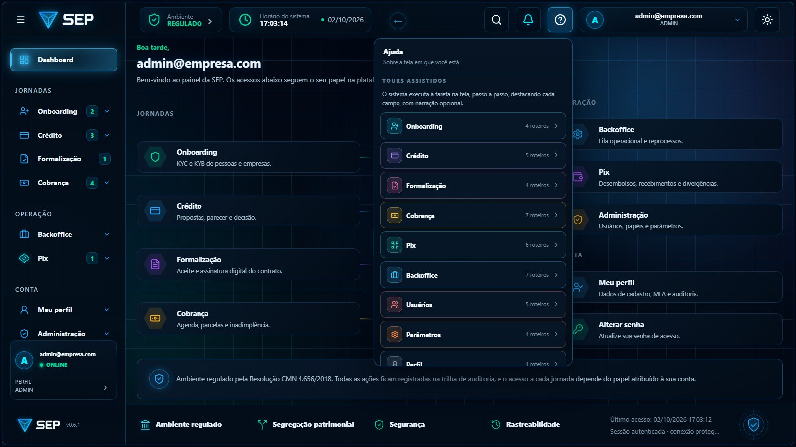
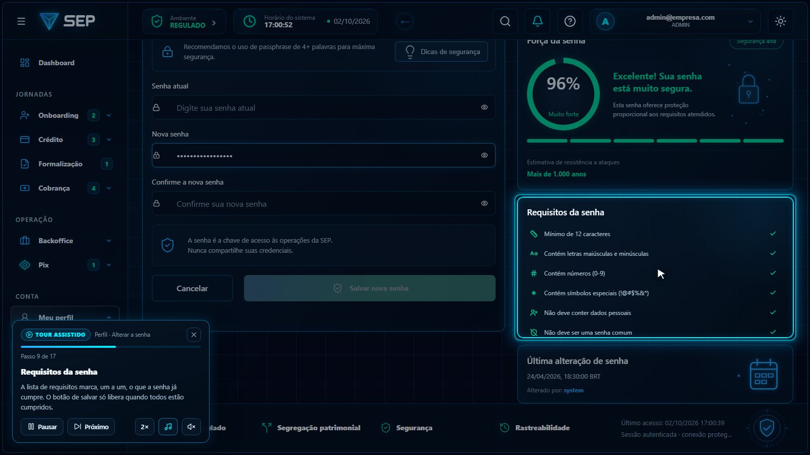

Por tarefa
O módulo completo ou uma tarefa só. Quem precisa conhecer apenas a inadimplência abre aquele roteiro, em dois minutos.
Pelo papel
O painel só lista o que a conta alcança. Roteiros que dependem de TOTP aparecem desabilitados, com o motivo e o que fazer.
Pela conta
Na jornada da credora, cada roteiro diz com qual conta de exemplo funciona: quem já tem credora, quem ainda vai cadastrar.
A mesma regra de quem usa de verdade
Quando uma operação mexe em dinheiro, em contrato ou em permissões, o sistema pede o código do aplicativo autenticador. O tour faz o mesmo: clica, é levado à confirmação, digita o código de demonstração e volta à tela de origem. Como a tela volta vazia depois da confirmação, o roteiro preenche os campos de novo antes de enviar. Em produção, os 25 pontos de gravação previstos nos roteiros nunca executam: o tour aponta, explica e para antes de enviar.
| Módulo | Operação demonstrada | O que acontece na tela | Confirmação |
|---|---|---|---|
| Usuários | Incluir usuário · Editar papéis | Cria a conta; altera os papéis | TOTP |
| Parâmetros | Alterar um parâmetro | Nova versão na trilha de auditoria | TOTP |
| Formalização | Aceitar o contrato | Contrato passa a "Em assinatura" | TOTP |
| Cobrança | Propor renegociação | Acordo registrado com vencimento e desconto | TOTP |
| Pix | Solicitar desembolso | Transferência criada, com chave de idempotência | TOTP |
| Backoffice | Resolver ocorrência · Disparar reprocesso | Item encerrado; reconsulta ao provedor | TOTP |
| Perfil | Alterar senha · Ativar TOTP | Só observa: o tour nunca altera a credencial | Não grava |


